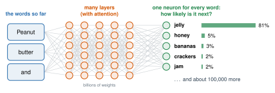

2.9 - How Chatbots Work
In Lesson 1.6, you learned that a chatbot writes one word at a time. It predicts the next word, again and again.
But how does it choose the next word? Today, you build the simplest chatbot possible. It does only one thing: it counts which word comes next. Then it writes. You’ll be surprised what counting can do, and what it can’t.
Today’s Plan (40 minutes)
- 🔥 Warm Up Finish the sentence 4 min
- 👥 Learn Together Count what comes next 10 min
- 🛠️ Try It The dice chatbot 20 min
- 💬 Talk About It Did it understand? 6 min
- 🔮 prediction: a best guess about something you don’t know yet
- 📚 large language model: a transformer trained on a huge amount of text to predict the next word
- 🧩 token: a word or a piece of a word that a chatbot reads and writes
- 🎲 random: with no pattern, so you can’t guess what comes next
Printable lesson sheet - the sheet you write on today.
🔥 Warm Up
Finish each sentence with one word. Don’t think too long!
- Peanut butter and …
- Once upon a …
- I am going to the …
Compare with a partner. Which ones did you both answer the same?
You have read “peanut butter and jelly” and “once upon a time” many times. Your brain counted! When one next word is very common, everyone predicts it.
“I am going to the …” has many good answers: store, park, school, bathroom. There’s no single winner.
👥 Learn Together
2.9.1 - Count What Comes Next
Here is a very small training text:
I like rice. I like soccer. I like rice and beans. My friend likes soccer. My friend likes rice.
The tiny chatbot reads it and makes a table. For each word, it counts the words that come right after it:
| After this word … | … these words came next | As a chance |
|---|---|---|
| I | like (3 times) | like: 100% |
| like | rice (2), soccer (1) | rice: 67%, soccer: 33% |
| likes | soccer (1), rice (1) | soccer: 50%, rice: 50% |
| rice | end of sentence (2), and (1) | end: 67%, and: 33% |
The chatbot turns counts into chances. After “like”, the next word was “rice” 2 times out of 3: that’s 67%. This list of chances is the chatbot’s answer, like the answers of the network in Lesson 2.6.
To write, it starts with a word and looks it up. It picks a next word, using the chances. Then it looks that word up, and so on.
Start with My: My → friend → likes → rice → and → beans → end.
“My friend likes rice and beans.” That sentence is not in the training text! The chatbot made something new by mixing pieces it had seen.
2.9.2 - From Counting to ChatGPT
A real chatbot is a large language model (Lesson 1.6). It has the same goal: predict the next word. But it doesn’t keep a table. It’s a neural network.

- The words so far go in.
- They pass through many layers. Attention (Lesson 1.6) lets each word look back at the other words.
- The output layer has one neuron for every word it knows, about 100,000. Each one says how likely its word is to come next.
- The chatbot picks a word, adds it, and runs the whole network again for the next word.
The answers look like your table’s chances. But a real chatbot looks back at thousands of words, not just one.
| The tiny chatbot | A real chatbot | |
|---|---|---|
| Looks back at | 1 word | thousands of words (with attention, Lesson 1.6) |
| Learned from | 5 sentences | a huge amount of text: books, websites, and more |
| Reads text as | whole words | tokens: words and pieces of words, like “play” + “ing” |
| Picks the next word by | counting | predicting, with a little chance mixed in |
Both chatbots predict the next word. Neither one checks if a sentence is true. A sentence can sound perfect and still be wrong. (You’ll catch this in Unit 4.)
🛠️ Try It
2.9.3 - The Dice Chatbot
You’re the chatbot. Work in a group of 2 to 4 (or alone).
- Finish the count table on your sheet for the training text above.
- Start with I or My.
- Look up the word. If there’s only one next word, write it.
- If there are two or more choices, roll a die. A die is random: you can’t guess what it will show. Your sheet shows which numbers go with which word. (More common words get more numbers.)
- Keep going until you reach the end of the sentence. Write 3 sentences.
- Did you write a sentence that is not in the training text?
💬 Talk About It
The tiny chatbot wrote “My friend likes rice and beans.” Did it understand that sentence? Think back to the Klingon Room in Lesson 1.3.
- The tiny chatbot did / did not understand, because …
- A real chatbot is like the tiny chatbot because …
- A real chatbot is different from the tiny chatbot because …
- If a chatbot learned from text with mistakes in it, it would …
📺 Watch
🏫 At school: watch this video on yout-ube.com
3Blue1Brown made this video in 2024, for a museum show about the history of chatbots. It shows how chatbots worked in 2024. Chatbots change fast, so some details may be different today.
While you watch: How many words did the model read? How is that like your count table?
Captions in your language: Press CC, then ⚙️ Settings, then Subtitles/CC, then Auto-translate.
🚀 Go Further
This chatbot does what you did with the dice, on screen. Work with a partner.
- Press Learn from this text. Click some words. Do the chances match your table?
- Choose no chance. Write a sentence. Write it again. Is it always the same?
- Choose a little chance. Write 5 sentences. Are they different?
- Choose a lot of chance. Click Next word and watch the bars. What happens to the chances?
- Choose a story about school. Write some sentences. Do any of them sound strange?
- Choose my own text. Write 5 sentences in your home language. Press Learn. Can it write in your language?
If a chatbot always picks the most common word, it writes the same thing every time. It can get stuck saying ordinary, boring sentences.
A little chance makes the writing more interesting. Too much chance makes the bars flatter, so rare words win more often, and the writing gets strange. Chatbot makers pick a setting in between.
Yes! It doesn’t know any language. It only counts. So it works for any language that puts spaces between words.
But it can only write words that were in its training text. A real chatbot that read very little text in your language will write it less well. (You’ll test this in Unit 3.)
Make a new table that looks at the last two words, not just one. For example: after “I like,” what comes next? Use it to write sentences. Are they better or worse? Why?
Everyone writes 2 sentences about our school. Put them all in the word-counting chatbot. Write 10 sentences. Pick the funniest one and the most “real” one.
🔭 Explore More: why a real chatbot uses weights, not a table. Read it on your own, if you want to learn more.